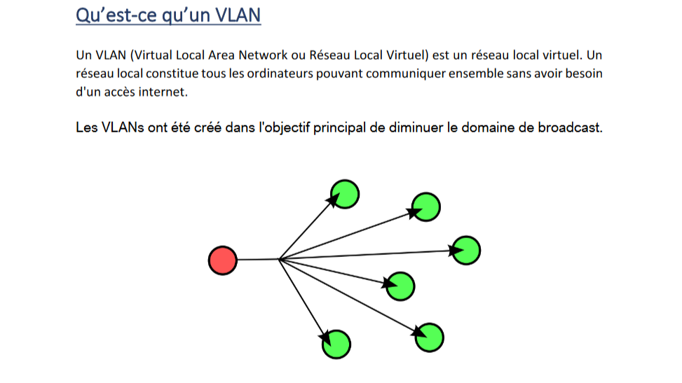
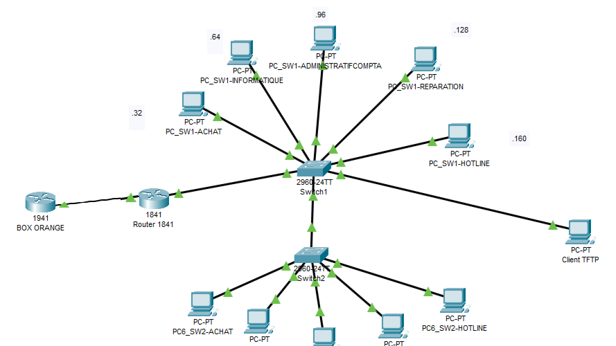

| Informations Complémentaires | |
|---|---|
| Outils : Visual Studio Code (HTML & CSS) | |
| Période : 06/03 - Aujourd'hui | |
| Compétences Mises en Oeuvre | |
| - Gérer le patrimoine informatique
- Répondre aux incidents et aux demandes d’assistance et d’évolution - Travailler en mode projet - Mettre à disposition des utilisateurs un service informatique |
|
Dans cette mission fictive d'appel d'offres, je suis seul et chargé d'intégrer une société de services pour la refonte de l'infrastructure de l'entreprise BROCKER’INFO. Cette dernière est composée de plusieurs services, notamment les services achat, informatique, administration/comptabilité, réparation et hotline. Dans un premier temps, je vais concevoir une maquette à l'aide du logiciel Cisco Packet Tracer, puis la mettre en place physiquement. Pour cela, je dispose de deux commutateurs Catalyst 2950 et d'un routeur Cisco 1841.
Les demandes de l'entreprise BROCKER’INFO incluent la sécurisation des accès aux équipements Cisco, l'optimisation des flux, la mise en place d'un service de sauvegarde via TFTP, ainsi qu'un accès à Internet.
Ce projet a été une expérience particulièrement gratifiante pour moi. Étant seul pendant sa réalisation, j'ai dû m'adapter et planifier mon emploi du temps de manière efficace pour ne pas prendre de retard. Finalement, j'ai réussi à remplir et respecter l'intégralité du cahier des charges.
Cette mission m'a permis d'acquérir des compétences essentielles en gestion du temps et en résolution de problèmes.
|  |  |